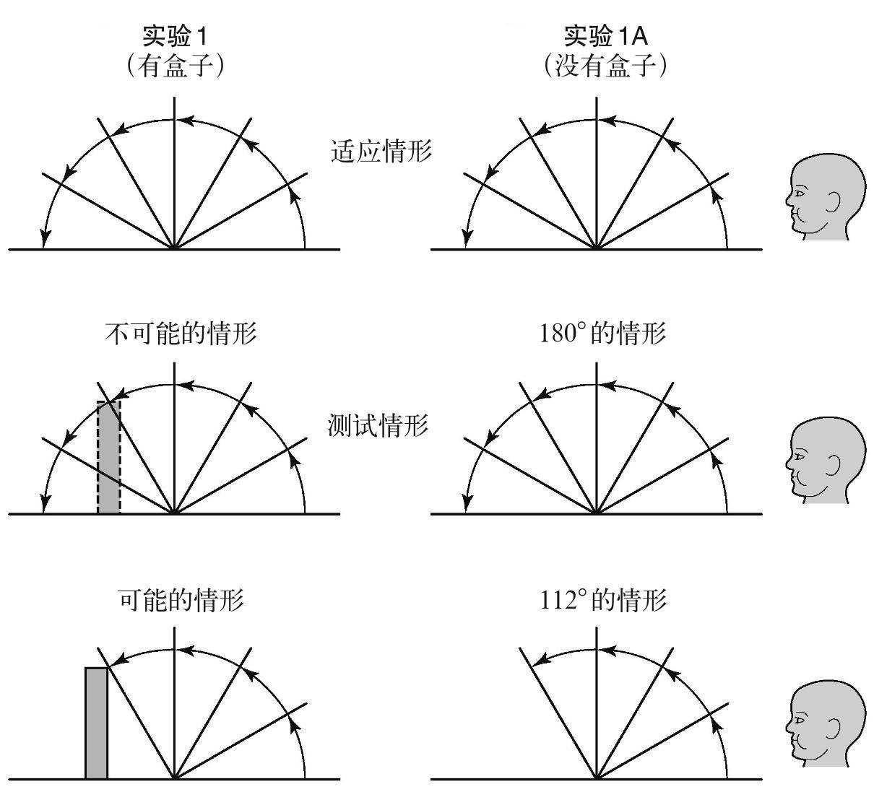

婴儿似乎还对物体之间的物理关系有着非常精确的预期。这些关系包括遮挡、包含和支撑。测试这些预期的实验通常也是基于“超出预期”的范例来设计的。婴儿坐在父母的腿上观看小舞台上发生的事件。父母通常戴着眼罩和耳机，这样他们便不会在无意间影响到孩子的反应。这类实验显示，当一个物体被它前面的其他物体遮挡或覆盖时，婴儿不会假设这个物体就此消失了。
在一系列著名的“超出预期”实验中，婴儿观看了一个隔板会自己转动的舞台（见图4）。隔板会从水平的位置开始转动，渐渐遮挡住舞台上的物体，然后一直转动直到碰到这个物体为止。如果舞台上有个木头盒子，相比隔板在碰到盒子后就停住（转动了120°），如果隔板能转动180°（不可能的情形），婴儿盯着看的时间会长很多。如果一个类似尺寸的海绵被放在舞台上，婴儿会预料到一定程度的压缩。如果屏幕转过120°，他们并不会一直盯着看。在两种情形中，婴儿都显然在预测，隐藏的物体仍旧存在。对婴儿来说，并非看不见就不存在。

图4 超出“隔板无法穿透一个固体”的预期
另一组实验用到了在舞台上沿着轨道行驶的玩具车。在最初的舞台布景中，玩具车在一段坡道的顶端，沿着坡道和舞台铺设了一条轨道。然后隔板升起来，遮挡住了部分的轨道。在婴儿观看的过程中，玩具车从坡道顶端开始移动。它行驶过坡道，然后沿着舞台短暂地通过了隔板背后再次出现，并一直行驶，直到从舞台侧面消失。在婴儿看过几次之后，隔板升了起来，并且有一个障碍物被放在了轨道上。接着隔板再次降下去，车被放在坡道顶端并开始行驶。如果婴儿明白隔板后面的障碍物仍旧存在的话，他们就不会期待玩具车的再次出现。相比车不再出现，当车再次出现时，3个月大的婴儿注视的时间都会长很多。这再次说明了，婴儿会认为隐藏起来的物体也仍旧存在。
从脑成像方法的发明开始，此类实验便增加了对大脑反应的记录（EEG，即脑电图）。脑电图测量的是，在环境事件的刺激下，脑细胞之间传递的低压电信号。在一个脑电图实验中，婴儿看着玩具火车驶入一个隧道但是并没有从另一端驶出。然后这个隧道被提起来，露出了火车。火车的出现是意料之中的——火车显然还留在隧道内。而有时，隧道被提起来时，里面是空的，尽管没有人看到火车离开了隧道。这是一个意料之外的消失情形。还有些时候，火车从隧道的一端驶入，从另一端驶出，然后隧道被提起来，可以看到里面没有火车。这是一个意料之中的消失情形。研究人员对比了婴儿在两种消失情形中的大脑活动。面对意料之中和意料之外的消失情形，大脑活动是相当不同的。因此，尽管在两个情形中婴儿都没有看到火车，而且婴儿都在盯着同一个空的位置看，但大脑内的电信号呈现出的模式却是不同的。在意料之外的消失情形中，婴儿盯着看的时间也明显长很多。这个实验表明，延长的观看时间确实说明了婴儿在思考什么。